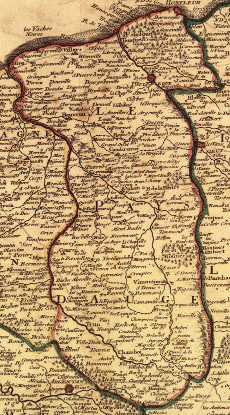

Le Pays d'Auge est une région de la Normandie située entre terre et mer, parsemée de petits villages et de fermes isolées au milieu des pommiers et des vaches. C'est une étape gastronomique réputée pour sa production de fromages (camembert, livarot, pont-l'évêque), de cidre et de calvados.
Voici une carte du Pays d’Auge :
Coupez le poulet en 4 morceaux.
Faites fondre le beurre dans une cocotte et mettez les morceaux de poulet à dorer de tout côté, ajoutez les champignons et l'oignon, assaisonnez, flambez au calvados, ajoutez le verre de cidre, couvrez et laissez cuire 45 min, à feu doux.
Au moment de servir, liez la cuisson à la crème fraîche et le jaune d'œuf.